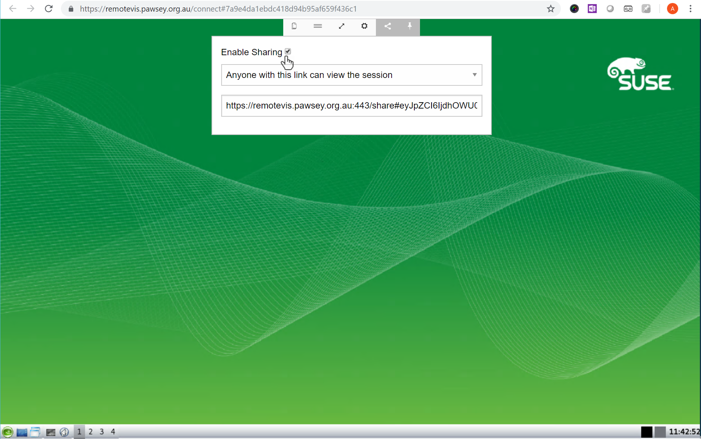
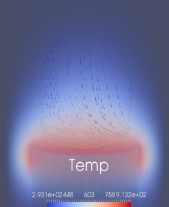
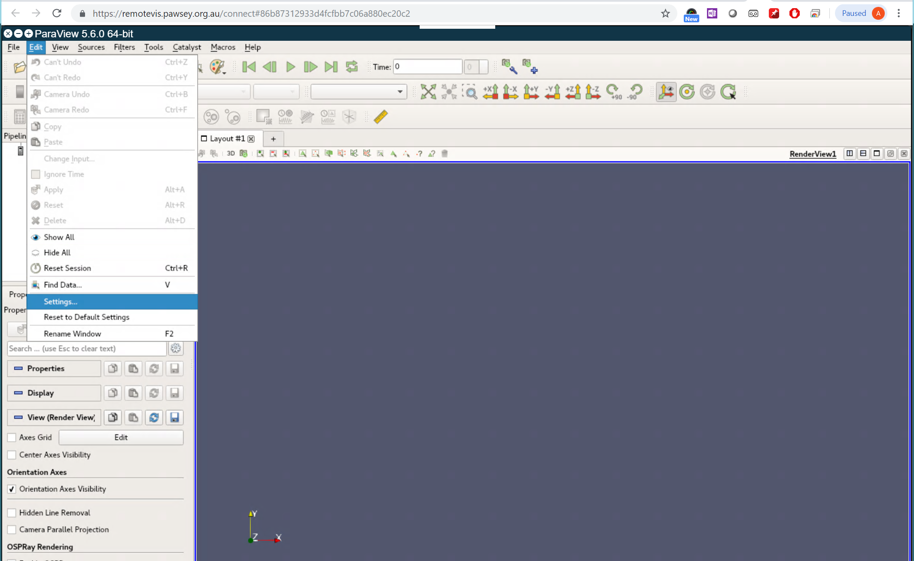
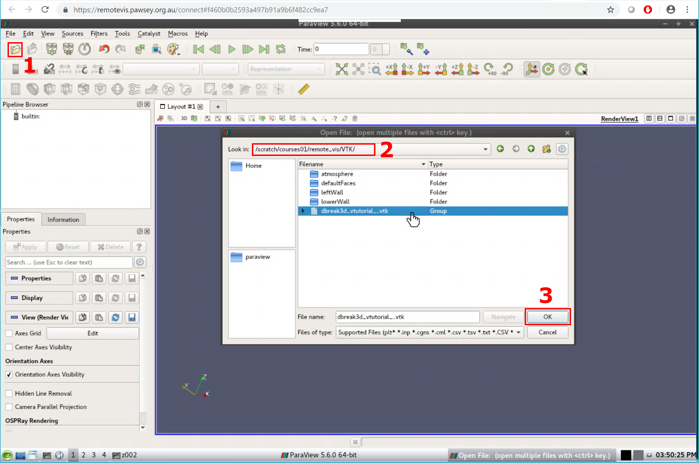
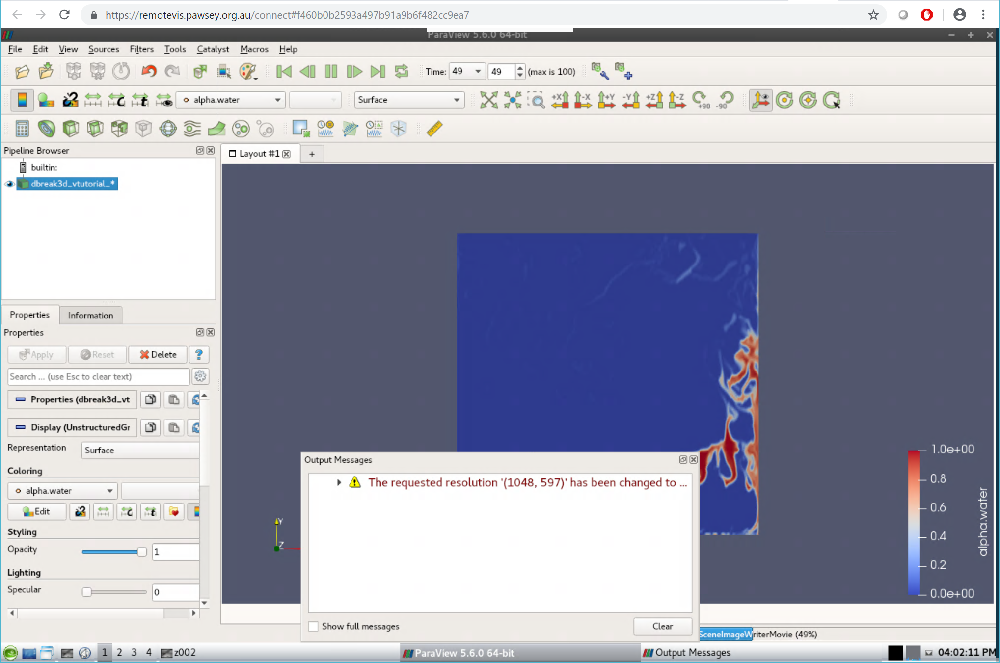

vis.pawsey.org.au
Remote visualisation
bit.ly/remotevis
Overview
- Visualisation and remote visualisation
- Remote visualisation facility at Pawsey
- Visualising using ParaView
Visualisation and Remote Visualisation
Visualisation
- Visualisation offers a “method for seeing the unseen”
- Aim is to improve understanding by compressing volumes of data
- Don't visualise without thinking
- It's not data mining, which doesn’t care about the meaning of the data
- With the increasing simulation data, visualisation has become mandatory to exploit the high level of detail available in such large data sets
Why do We Need to Visualise?
“Purpose of computing is insight, not numbers” Richard Hamming (1962)
“Computing, and in particular supercomputing, without visualisation, is like assembling a jigsaw puzzle in the dark” Richard Weinberg (1988)
Remote Visualisation
Remote Visualisation (Conventional, but Obsolete)
X11 Forwarding
- Version 11 of the X window system - X11
- X Server runs on the local machine
- X11 forwarding forwards the X11 packets from the remote machine to your local screen
- The server accepts requests for graphical output (windows) and sends back user input (from keyboard, mouse, or touch screen)
- X11 packets can be forwarded through SSH (secure shell)
- Any X11 programs started will then go through an encrypted channel
- Enabling X11 forwarding: ssh -X couXYZ@zeus.pawsey.org.au
X11 Forwarding Cont.
Mac and Linux users: Use terminal application
Windows users: We recommend using MobaXterm, where X11 forwarding is enabled by default
X11 Forwarding Cont.
ssh -X couXYZ@zeus.pawsey.org.au
xclock
module load mesa
glxgears
X11 Forwarding Limitations
- Remote visualisation using X11 forwarding runs on the login node, which is shared among all Zeus users
- Runs on a single core and does not make use of the remaining cores and the “GPU card”
- Very slow compared to other modern remote visualisation techniques (eg. Virtual Network Computing - VNC)
- X11 forwarding will stop once your connection is broken
- Poses security hazard when used in untrusted environment
Remote Visualisation (Recommended Way)
Remote Visualisation Infrastructure at Pawsey
- Performed on Zeus - 20 nodes with GPU are dedicated
- Shares the same file systems with other Pawsey supercomputers
- /home
- /scratch
- /group
- This avoids the need to copy simulation data across Magnus/Galaxy/Zeus
Remote Visualisation at Pawsey
- Performed using web technology
- No need to install any application on client’s machine – OS independent
Web-based Remote Visualisation
Open your preferred browser (e.g. Chrome, Firefox) and goto:
https://remotevis.pawsey.org.au
Web-based Remote Visualisation Cont.
Web-based Remote Visualisation Cont.
Web-based Remote Visualisation Cont.
Web-based Remote Visualisation Cont.
Web-based Remote Visualisation Cont.
Web-based Remote Visualisation Cont.
Web-based Remote Visualisation Cont.
Web-based Remote Visualisation Cont.
Web-based Remote Visualisation Cont.
Web-based Remote Visualisation Cont.
Web-based Remote Visualisation Cont.
Web-based Remote Visualisation Cont.
Web-based Remote Visualisation Cont.
Web-based Remote Visualisation Cont.
Web-based Remote Visualisation Cont.
Web-based Remote Visualisation Cont.
Web-based Remote Visualisation Cont.
Web-based Remote Visualisation Cont.
Web-based Remote Visualisation Cont.
Web-based Remote Visualisation Cont.
Web-based Remote Visualisation Cont.
Web-based Remote Visualisation
Right click on the desktop and click "xterm"
module load virtualgl
vglrun glxspheres64

Remote Visualisation at Pawsey
module load virtualgl
vglrun glxgears
Comparison
Visualising Using ParaView
11.png)
ParaView
- ParaView is an open-source, cross-platform data analysis and visualisation application
- Has a user-friendly interface built on top of the Visualisation ToolKit (VTK) library
- An extensible, modular architecture based on open standards
- Mainly used to analyse large datasets (petascale size) using distributed-memory computing resources
- Supports a wide range of data formats
Supported Data Types
ParaView Interface
Common Filters
Hands On Session - ParaView
Launching ParaView in
Stand-alone Mode
- Start web-based remote visualisation on Zeus
- Launch ParaView in stand-alone mode using the following commands:
module load virtualgl paraview
vglrun paraview
Launching ParaView Cont.
Data
Simulation of the flow of air around a heated and spinning disk Open Data
/scratch/courses01/remote_vis/paraview/disk_out_ref.ex2Load All Variables
Add Stream Tracer
Add Stream Tracer cont.
Open Quick Launch
Add Tube Filter
Add Tube Filter Cont.
Add Glyph Filter
Configure Glyph Filter Properties
Configure Glyph Colouring
Visualisation
Visualisation
ParaView in Parallel - Client/Server Mode
Client/Server Mode
- To visualise large datasets, ParaView comes with the ability to run ParaView across multiple nodes using the distributed-memory paradigm
- We recommend to run the client on one node - make use of the graphics card on the corresponding node to visualise quickly at the front-end
- The ParaView servers run on other compute node(s) -The data communication is very fast, as the nodes are connected by an Infiniband cable (56Gb/s signaling rate)
Client/Server Mode

Launching ParaView Servers
- Localhost - Within the same node
- Zeus - On Another Zeus Partition
ParaView Servers on Localhost - Within the Same Node
Open ParaView
ParaView Servers on Localhost
ParaView Servers on Localhost
ParaView Servers on Localhost
ParaView Servers on Localhost
ParaView Servers on Zeus
ParaView Servers on Zeus
ParaView Servers on Zeus
ParaView Servers on Zeus
ParaView Servers on Zeus
ParaView Servers on Zeus
Open a terminal (MobaXterm if Windows) on your laptop
ssh couxyz@zeus.pawsey.org.ausqueue -u $USER
ParaView Servers on Zeus
ParaView Servers on Zeus
squeue -u $USER
For Efficient Parallel Rendering
Open "Settings" dialog box (Edit -> Settings)
For Efficient Parallel Rendering Cont.
“Render View” tab => “Remote/Parallel Rendering Options” => Set “Remote Render threshold” to 0 (Mbytes)
Large dataset in
Client-Server Mode
Data
- Dataset – Dam break
- Column of water behind a membrane
- At t = 0s, membrane is removed, then; ➡️ column of water collapses
➡️ water impacts an obstacle
➡️ creates a complicated flow structure

Open Data
/scratch/courses01/remote_vis/VTK/dbreak3d_vtutorial_..vtk
Open Data Cont.
Open Data Cont.
Generate Movie
Generate Movie Cont.
Generate Movie Cont.
Generate Movie Cont.
Generate Movie Cont.
Generate Movie Cont.

scp couxyz@zeus.pawsey.org.au:/scratch/courses01/couxyz/FILE_NAME .
Terminating Client-Server ParaView
ParaView Servers on Zeus
scancel job_id
ParaView Servers on Zeus
ParaView Servers on Zeus
More Information and Help
Visualisation Documentation:
Contact:
visualisation@pawsey.org.au
Help:
help@pawsey.org.au